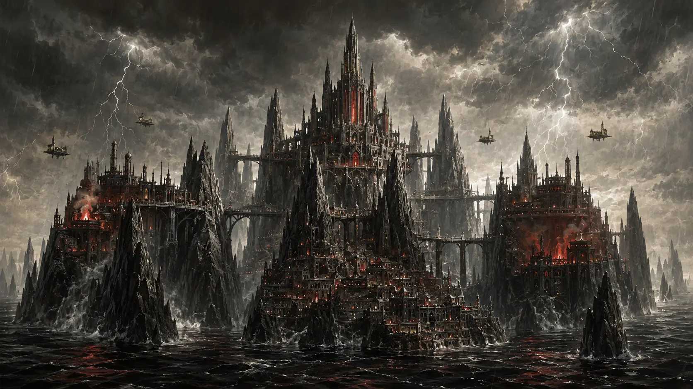

Capitolium
Thronkathedrale, Inquisition, Chronisten und die kleineren Kathedralen der vier übrigen Häuser.

Heimatwelt der Nyxaren · Innerer Arm
Kein Morgen. Kein stiller Himmel. Nur Stein, Sturm und die Stadt Cruor.
01 · Die Welt
Wer Nyxar vom Orbit aus betrachtet, sieht zunächst nur Wolken. Schwarz, schwer und von Blitzen durchzogen, liegen sie wie ein zweiter Ozean über dem Planeten.
Darunter bedeckt eine giftige See fast die gesamte Oberfläche. Ihre Wellen greifen Metall an, ihr Dampf verätzt ungeschützte Lungen. Land gibt es nur auf den Gipfeln gewaltiger Felsnadeln. Manche ragen mehrere Kilometer aus dem Ozean und enden in breiten, windgepeitschten Hochebenen.
Ein klarer Himmel ist so selten, dass Chronisten jeden bekannten Fall verzeichnen. Für viele Nyxaren gilt ein solcher Augenblick als Zeichen der Dunklen Mutter. Andere verschließen Türen und Fensterläden. Auf einer Welt, die niemals Tageslicht kennt, kann selbst Helligkeit bedrohlich wirken.
„Wenn der Himmel aufreißt, schweigt selbst die Inquisition.“
Sprichwort aus dem Suburbium
02 · Cruor

Cruor ist keine Hauptstadt unter vielen. Außerhalb ihrer Mauern gibt es auf Nyxar keine zweite Siedlung, in die man fliehen könnte.
Brücken überspannen die Abgründe zwischen den Felsnadeln. Lastenaufzüge verschwinden kilometerweit in Schächten. Über allem erhebt sich die Thronkathedrale des Hauses Voss'thane. Je höher ein Gebäude liegt, desto näher befindet es sich an Macht, reinem Blut und den Maschinengeistern des Reiches.
03 · Die fünf Viertel
Thronkathedrale, Inquisition, Chronisten und die kleineren Kathedralen der vier übrigen Häuser.
Techpriester, Flottenwerften und die gewaltigen Maschinenhallen, die Cruor am Leben halten.
Handel, Verträge und der sichtbare Austausch zwischen Hausdienern, Pilgern und Fremden.
Geschlossene Höfe mit Tierhaltung und Pflanzenzucht – ergänzende Nahrung in einer blutabhängigen Gesellschaft.
Die Unterstadt und Heimat der meisten Nyxaren. Nicht verfallen, aber weit entfernt vom Licht der Macht.
04 · Am Spieltisch
Ein Agententeam wird auf Nyxar niemals übersehen. Fremde stehen unter Beobachtung, Hausnamen öffnen oder schließen Wege, und selbst eine technische Störung kann als religiöse Krise behandelt werden.
Ein Maschinengeist antwortet nicht mehr. Die Techpriester sprechen von Ketzerei, während die Werftleitung Sabotage vermutet.
Über Cruor reißt die Wolkendecke auf. Noch bevor das Omen gedeutet ist, verschwindet ein Chronist der Inquisition.
Echtes menschliches Blut gelangt in großen Mengen auf den Schwarzmarkt. Seine Herkunft führt tiefer ins Capitolium als erwartet.